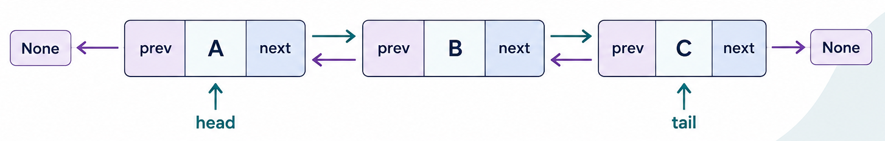

Doubly Linked List Data Structure in Python – Complete Tutorial with Examples
Master the essentials of the Doubly Linked List in Python with clear explanations, real-world analogies, and hands-on code examples. Learn how nodes with both next and prev pointers enable true bidirectional traversal and faster $O(1) tail operations. Designed for beginners and developers prepping for technical interviews, this guide covers custom implementations, built-in alternatives, and classic patterns like the LRU Cache.

Designed for both beginners and developers preparing for technical interviews, this tutorial covers:
- Core Concepts & Structure: Understand how doubly linked lists work, featuring nodes with both
nextandprevpointers for true bidirectional traversal. - Implementations: Build a doubly linked list from scratch using a custom
Nodeclass, explore Python's built-incollections.deque, and learn the sentinel (dummy) node pattern. - Essential Operations: Master $O(1) insertions and deletions at both the head and tail, as well as searching, updating, and reversing nodes.
- Real-World Applications: Explore practical examples such as music player playlist navigation, browser history back/forward buttons, undo/redo text editors, and photo gallery viewers.
- Interview Prep & Patterns: Practice common doubly-linked-list problems, including reversing a list, designing an LRU Cache, flattening a multilevel list, and building a bounded deque.
Table of Contents
Introduction
1. What Is Doubly Linked List?
A Doubly Linked List is a linear data structure made of nodes, where each node stores a value AND two pointers: one to the next node, and one to the previous node. This is the key upgrade over a singly linked list, you can now travel in both directions.
Real-World Analogy: A train where each car is connected to the car in front AND the car behind. Unlike a singly linked train (where the engine can only look backward toward the cars behind it), here any car can tell you what's directly ahead of it and directly behind it, you can walk the train in either direction without needing to start over from the front.

Each node contains three essential parts:
value– the actual data stored in the node.next– pointer to the following node (orNoneif this is the last node).prev– pointer to the previous node (orNoneif this is the first node).
Real systems/software that use doubly linked lists internally:
- Browser history Browser history (back AND forward buttons - needs both directions).
- Music/video players with "previous" and "next" track controls.
- Undo/Redo systems in text editors and design tools (undo goes back, redo goes forward).
- collections.deque in Python - implemented internally as a doubly linked list of blocks.
- LRU (Least Recently Used) Caches - used in databases, web browsers, and operating systems to decide what to evict from memory when it's full.
- Image/photo gallery viewers - wiping left/right between photos.
In this tutorial, you'll learn how to create a doubly linked list in Python, connect nodes, perform common operations, understand time complexity, and solve practical linked-list problems.
2. Core Operations & Complexity
Before you write a single line of code, it helps to know exactly what a doubly linked list can do, and how fast each action really is. In this section, we break down the core linked list operations: insert, delete, search / traversal, update, and reverse, along with their time complexities and underlying mechanics.
| Operation | Description | Time Complexity | Why |
|---|---|---|---|
| Insert at head | Add a new node at the front | $O(1) | Just relink a few pointers - no walking required |
| Insert at tail | Add a new node at the end | $O(1) | Since we track a tail pointer directly, no walking needed - this is FASTER than a singly linked list without a tail pointer |
| Insert at middle | Add a node after a known node | $O(1) | Once you have a reference to the node, relinking next/prev is instant |
| Delete at head | Remove the first node | $O(1) | Move head forward, update the new head's prev to None |
| Delete at tail | Remove the last node | $O(1) | Since we have a tail pointer AND prev pointers, no walking needed - also FASTER than a singly linked list |
| Delete at middle | Remove a known node | $O(1) | The node's prev and next neighbors can relink directly to each other |
| Search / Traversal | Find if/where a value exists | $O(n) | Still must check nodes one at a time - no shortcuts for search |
| Update a value | Change the value at a known position | $O(n) | Must walk to that position first; the update itself is $O(1) |
| Reverse the list | Flip the direction of traversal | $O(n) | Must visit and swap next/prev on every node |
The big takeaway: Compared to a singly linked list, deleting at the tail goes from O(n) to O(1), this is the entire reason doubly linked lists exist. The trade-off is extra memory per node (one more pointer) and slightly more bookkeeping on every insert/delete.
3. Core Operations Explained (With Examples)
The following sections explain each doubly linked list operation using short, focused code examples. Every snippet demonstrates one task at a time, making it easier to understand how the node connections change.
After covering the individual operations, we'll bring them together in a complete DoublyLinkedList class in Section 4. This step-by-step approach helps you understand the pointer logic before working with the full implementation.
We'll use this Node class throughout, with both next and prev pointers:
Python
class Node:
def __init__(self, value):
self.value = value
self.next = None # pointer forward
self.prev = None # pointer backward - the key addition vs. singly linked list
3.1 Insertion at Head
How it works, step by step:
- Create a new node.
- Point the new node's
nextat the current head. - If a head already exists, point its
prevback at the new node. - Update
headto be the new node.
Before:
None ← [ B ] ⇄ [ C ] → None
After inserting A at head:
None ← [ A ] ⇄ [ B ] ⇄ [ C ] → None
Isolated code:
Python
def insert_at_head(head, value):
new_node = Node(value)
new_node.next = head
if head is not None:
head.prev = new_node # step 3: old head now points BACK at the new node
return new_node # step 4: this is the new head
head = Node("B")
head.next = Node("C")
head.next.prev = head
head = insert_at_head(head, "A")
# head is now A <-> B <-> C
Step-by-Step Explanation
This trace matrix illustrates the step-by-step memory pointer changes required to create and prepending nodes to a Doubly Linked List (DLL), resulting in a connected sequence A <-> B <-> C.
Doubly Linked List Pointer Manipulation Trace
| Step | Statement | head | New node | Links after the step |
|---|---|---|---|---|
| 1 | head = Node("B") |
B | - | B.prev = None, B.next = None |
| 2 | head.next = Node("C") |
B | C | B.next -> C |
| 3 | head.next.prev = head |
B | C | B <-> C |
| 4 | new_node = Node("A") |
B | A | A is created but not linked yet |
| 5 | new_node.next = head |
B | A | A.next -> B, so A -> B <-> C |
| 6 | head.prev = new_node |
B | A | B.prev -> A, so A <-> B <-> C |
| 7 | return new_node |
A | A | head is updated to A |
Visualizing the Transformation Steps
Steps 1 to 3: Creating B and C
Python
head = Node("B")
head.next = Node("C")
head.next.prev = head
Node B is initialized as the head. Node C is attached to B's right (next), and C's left pointer (prev) is wired back to B:
head → [ None | B | next ] ⇄ [ prev | C | None ]Steps 4 to 6: Prepending A
Python
new_node = Node("A")
new_node.next = head
head.prev = new_node
Node A is instantiated independently. A's forward pointer (next) is aimed at current head B, and B's backward pointer (prev) is connected to A:
[ None | A | next ] ⇄ [ prev | B | next ] ⇄ [ prev | C | None ]
↑
head
Step 7: Updating the Head
Python
head = new_node
return headThe head reference is reassigned to point to Node A, making A the official first element of the doubly linked list:
head → [ None | A | next ] ⇄ [ prev | B | next ] ⇄ [ prev | C | None ]Summary: Adding a node to the front of a doubly linked list requires explicitly linking both the forward pointer of the new node (new_node.next) and the backward pointer of the old head (head.prev) before shifting the head pointer.
3.2 Insertion at Tail
How it works, step by step:
- Create a new node.
- Point the new node's
prevat the current tail. - Point the current tail's
nextat the new node. - Update
tailto be the new node.
Before (with a tracked tail pointer):
head → [ A ] ⇄ [ B ] → None
↑ tail
After inserting C at tail:
head → [ A ] ⇄ [ B ] ⇄ [ C ] → None
↑ tail
Isolated code:
Python
def insert_at_tail(tail, value):
new_node = Node(value)
new_node.prev = tail # step 2: new node looks back at old tail
if tail is not None:
tail.next = new_node # step 3: old tail now points forward at new node
return new_node # step 4: this is the new tail
node_a = Node("A")
node_b = Node("B")
node_a.next = node_b
node_b.prev = node_a
tail = node_b
tail = insert_at_tail(tail, "C")
# list is now A <-> B <-> C, tail = C
Step-by-Step Explanation
This trace matrix illustrates the step-by-step memory pointer operations for constructing a Doubly Linked List (DLL) and appending a new node to the end, resulting in the final linked chain A <-> B <-> C.
Appending to a Doubly Linked List Trace
| Step | Code | What happens | List state |
|---|---|---|---|
| 1 | node_a = Node("A") |
Creates node A. | A |
| 2 | node_b = Node("B") |
Creates node B. | A and B exist separately |
| 3 | node_a.next = node_b |
A points forward to B. | A -> B |
| 4 | node_b.prev = node_a |
B points backward to A. | A <-> B |
| 5 | tail = node_b |
Tail points to B because B is the last node. | A <-> B, tail = B |
| 6 | new_node = Node("C") |
Creates the new node C. | A <-> B and separate C |
| 7 | new_node.prev = tail |
C points backward to B. | A <-> B <- C |
| 8 | tail.next = new_node |
B points forward to C. | A <-> B <-> C |
| 9 | return new_node |
Returns C as the new tail. | tail = C |
Visualizing the Transformation Steps
Steps 1 to 5: Initializing Nodes and Setting Tail
Python
node_a = Node("A")
node_b = Node("B")
node_a.next = node_b
node_b.prev = node_a
tail = node_bNode A and Node B are connected bilaterally. The tail reference is assigned to Node B:
[ None | A | next ] ⇄ [ prev | B | None ]
↑
tailSteps 6 to 8: Connecting Node C
Python
new_node = Node("C")
new_node.prev = tail
tail.next = new_nodeNode C is instantiated. First, C's backward link (prev) points to current tail B. Then, B's forward link (next) points to C, completing the two-way connection:
[ None | A | next ] ⇄ [ prev | B | next ] ⇄ [ prev | C | None ]
↑
tailStep 9: Updating Tail Pointer
Python
tail = new_node
return tailThe tail pointer moves forward to Node C, marking it as the official end of the list:
[ None | A | next ] ⇄ [ prev | B | next ] ⇄ [ prev | C | None ]
↑
tailSummary: Appending a new node to the end of a doubly linked list using a tail reference requires setting new_node.prev = tail and tail.next = new_node before shifting tail forward.
3.3 Insertion at the Middle (After a Known Node)
How it works, step by step:
- Create a new node.
- Point the new node's
nextat the known node's old next neighbor. - Point the new node's
prevat the known node. - Update the OLD next neighbor's
prevto point at the new node (if it exists). - Update the known node's
nextto point at the new node.
Before (inserting after B):
[ A ] ⇄ [ B ] ⇄ [ D ]
After inserting C after B:
[ A ] ⇄ [ B ] ⇄ [ C ] ⇄ [ D ]
Isolated code:
Python
def insert_after_node(known_node, value):
new_node = Node(value)
new_node.next = known_node.next # step 2
new_node.prev = known_node # step 3
if known_node.next is not None:
known_node.next.prev = new_node # step 4: old neighbor looks back at new node
known_node.next = new_node # step 5
node_a = Node("A")
node_b = Node("B")
node_d = Node("D")
node_a.next = node_b
node_b.prev = node_a
node_b.next = node_d
node_d.prev = node_b
insert_after_node(node_b, "C")
# list is now A <-> B <-> C <-> D
Step-by-Step Explanation
This trace matrix illustrates the step-by-step memory pointer operations for constructing a Doubly Linked List (DLL) and appending a new node to the end, resulting in the final linked chain A <-> B <-> C.
Appending to a Doubly Linked List Trace
| Step | Code | What happens | List state |
|---|---|---|---|
| 1 | node_a = Node("A") |
Creates node A. | A |
| 2 | node_b = Node("B") |
Creates node B. | A and B exist separately |
| 3 | node_a.next = node_b |
A points forward to B. | A -> B |
| 4 | node_b.prev = node_a |
B points backward to A. | A <-> B |
| 5 | tail = node_b |
Tail points to B because B is the last node. | A <-> B, tail = B |
| 6 | new_node = Node("C") |
Creates the new node C. | A <-> B and separate C |
| 7 | new_node.prev = tail |
C points backward to B. | A <-> B <- C |
| 8 | tail.next = new_node |
B points forward to C. | A <-> B <-> C |
| 9 | return new_node |
Returns C as the new tail. | tail = C |
Visualizing the Transformation Steps
Steps 1 to 5: Initializing Nodes and Setting Tail
Python
node_a = Node("A")
node_b = Node("B")
node_a.next = node_b
node_b.prev = node_a
tail = node_bNode A and Node B are connected bilaterally. The tail reference is assigned to Node B:
[ None | A | next ] ⇄ [ prev | B | None ]
↑
tailSteps 6 to 8: Connecting Node C
Python
new_node = Node("C")
new_node.prev = tail
tail.next = new_nodeNode C is instantiated. First, C's backward link (prev) points to current tail B. Then, B's forward link (next) points to C, completing the two-way connection:
[ None | A | next ] ⇄ [ prev | B | next ] ⇄ [ prev | C | None ]
↑
tailStep 9: Updating Tail Pointer
Python
tail = new_node
return tailThe tail pointer moves forward to Node C, marking it as the official end of the list:
[ None | A | next ] ⇄ [ prev | B | next ] ⇄ [ prev | C | None ]
↑
tailSummary: Appending a new node to the end of a doubly linked list using a tail reference requires setting new_node.prev = tail and tail.next = new_node before shifting tail forward.
3.4 Insertion at the Middle (Before a Known Value)
How it works, step by step:
- Create a new node.
- Point the new node’s
nextto the known node. - Point the new node’s
prevto the known node’s old previous neighbor. - Update the old previous neighbor’s
nextto point to the new node, if it exists. - Update the known node’s
prevto point back to the new node.
Before inserting C before D:
[ A ] ⇄ [ B ] ⇄ [ D ]
After inserting C before D
[ A ] ⇄ [ B ] ⇄ [ C ] ⇄ [ D ]
Isolated code:
Python
def insert_before_node(known_node, value):
new_node = Node(value)
new_node.next = known_node # step 2: C points forward to D
new_node.prev = known_node.prev # step 3: C points back to B
if known_node.prev is not None:
known_node.prev.next = new_node # step 4: B points forward to C
known_node.prev = new_node # step 5: D points back to C
node_a = Node("A")
node_b = Node("B")
node_d = Node("D")
node_a.next = node_b
node_b.prev = node_a
node_b.next = node_d
node_d.prev = node_b
insert_before_node(node_d, "C")
# list is now A <-> B <-> C <-> D
Step-by-Step Explanation
This trace matrix demonstrates how to insert a new node into a Doubly Linked List (DLL) before a specified target node (known_node), resulting in the inserted sequence A <-> B <-> C <-> D.
Inserting a Node Before a Given Node Trace
| Step | Code | What happens | List state |
|---|---|---|---|
| 1 | node_a = Node("A") |
Creates node A. | A |
| 2 | node_b = Node("B") |
Creates node B. | A and B are separate |
| 3 | node_d = Node("D") |
Creates node D. | A, B, and D are separate |
| 4 | Initial pointer setup | A and B are linked; B and D are linked. | A <-> B <-> D |
| 5 | new_node = Node("C") |
Creates C, but it is not connected yet. | A <-> B <-> D and separate C |
| 6 | new_node.next = known_node |
C points forward to D. | A <-> B <-> D and C -> D |
| 7 | new_node.prev = known_node.prev |
C points backward to B. | B <- C -> D |
| 8 | known_node.prev.next = new_node |
B changes its next from D to C. | A <-> B -> C -> D |
| 9 | known_node.prev = new_node |
D changes its prev from B to C. | A <-> B <-> C <-> D |
Visualizing the Insertion Before Target Node
Steps 1 to 4: Initial List Setup (known_node = node_d)
Python
known_node = node_d # Target node is DThe original list contains A, B, and D linked sequentially:
[ A ] ⇄ [ B ] ⇄ [ D ]
↑
known_nodeSteps 5 to 7: Setting Up New Node C's Pointers
Python
new_node = Node("C")
new_node.next = known_node # C points forward to D
new_node.prev = known_node.prev # C points backward to BNode C sets its links outward to point to D and D's predecessor (B):
[ C ]
↙ ↘
[ A ] ⇄ [ B ] ⇄ [ D ]Steps 8 to 9: Updating Existing Links of Neighbor Nodes
Python
known_node.prev.next = new_node # B's next points to C
known_node.prev = new_node # D's prev points to CNode B and Node D update their pointers to link directly through Node C:
[ A ] ⇄ [ B ] ⇄ [ C ] ⇄ [ D ]Summary: When inserting before a target node, link the new node's next to the target node and its prev to the target node's predecessor first, then update the neighboring pointers to complete the insertion.
3.5 Deletion at Head
How it works, step by step:
- Move
headto point athead.next. - If the new head exists, set its
prevtoNone(it no longer has anything before it).
Before:
None ← [ A ] ⇄ [ B ] ⇄ [ C ] → None
After deleting the head:
None ← [ B ] ⇄ [ C ] → None
Isolated code:
Python
def delete_head(head):
if head is None:
return None
new_head = head.next
if new_head is not None:
new_head.prev = None # step 2: new head has nothing before it now
return new_head
head = Node("A")
head.next = Node("B")
head.next.prev = head
head.next.next = Node("C")
head.next.next.prev = head.next
head = delete_head(head)
# head is now B <-> C
Step-by-Step Explanation
This trace matrix demonstrates how to delete the head node (first node) of a Doubly Linked List (DLL), shifting the list reference so that the second node becomes the new head, leaving B <-> C.
Deleting the Head Node in a Doubly Linked List Trace
| Step | Code | What happens | List state |
|---|---|---|---|
| 1 | head = Node("A") |
Creates A as the first node. | A |
| 2 | head.next = Node("B") |
A points forward to B. | A -> B |
| 3 | head.next.prev = head |
B points backward to A. | A <-> B |
| 4 | head.next.next = Node("C") |
B points forward to C. | A <-> B -> C |
| 5 | head.next.next.prev = head.next |
C points backward to B. | A <-> B <-> C |
| 6 | new_head = head.next |
B is saved as the new head. | Old head: A, new head: B |
| 7 | new_head.prev = None |
B removes its backward link to A. | A -> B <-> C, but A is no longer part of the list |
| 8 | return new_head |
B is returned. | B <-> C |
| 9 | head = delete_head(head) |
head now points to B. | head = B |
Visualizing Head Node Deletion
Steps 1 to 5: Initial List Setup (A <-> B <-> C)
head → [ None | A | next ] ⇄ [ prev | B | next ] ⇄ [ prev | C | None ]Steps 6 to 7: Advancing Head Reference and Unlinking Backward Pointer
Python
new_head = head.next
new_head.prev = NoneNode B becomes the reference target for the new head, and Node B's prev link to Node A is cut (set to None):
[ None | A | next ] ──→ [ None | B | next ] ⇄ [ prev | C | None ]
↑
new_headSteps 8 to 9: Finalizing Head Assignment
Python
head = delete_head(head)The main head variable updates to Node B. Node A is now completely disconnected from the traversable list and eligible for garbage collection:
head → [ None | B | next ] ⇄ [ prev | C | None ]Summary: Deleting the head node of a doubly linked list involves advancing the head pointer to head.next and setting the new head's prev reference to None.
3.6 Deletion at Tail
How it works, step by step:
- Move
tailto point attail.prev. - If the new tail exists, set its
nexttoNone.
Before:
head → [ A ] ⇄ [ B ] ⇄ [ C ] → None
↑ tail
After deleting the tail (C):
head → [ A ] ⇄ [ B ] ⇄ [ C ] → None
↑ tail
Isolated code:
Python
def delete_tail(tail):
if tail is None:
return None
new_tail = tail.prev
if new_tail is not None:
new_tail.next = None # step 2: new tail has nothing after it now
return new_tail
node_a = Node("A")
node_b = Node("B")
node_c = Node("C")
node_a.next = node_b
node_b.prev = node_a
node_b.next = node_c
node_c.prev = node_b
tail = node_c
tail = delete_tail(tail)
# list is now A <-> B, tail = B
Step-by-Step Explanation
This trace matrix demonstrates how to delete the tail node (last node) of a Doubly Linked List (DLL), shifting the list reference so that the second-to-last node becomes the new tail, leaving A <-> B.
Deleting the Tail Node in a Doubly Linked List Trace
| Step | Code | What happens | List state |
|---|---|---|---|
| 1 | node_a = Node("A") |
Creates node A. | A |
| 2 | node_b = Node("B") |
Creates node B. | A and B are separate |
| 3 | node_c = Node("C") |
Creates node C. | A, B, and C are separate |
| 4 | node_a.next = node_b |
A points forward to B. | A -> B |
| 5 | node_b.prev = node_a |
B points backward to A. | A <-> B |
| 6 | node_b.next = node_c |
B points forward to C. | A <-> B -> C |
| 7 | node_c.prev = node_b |
C points backward to B. | A <-> B <-> C |
| 8 | tail = node_c |
C is stored as the last node. | tail = C |
| 9 | new_tail = tail.prev |
B is saved as the new possible tail. | new_tail = B |
| 10 | new_tail.next = None |
B removes its forward link to C. | A <-> B, and C is removed from the list |
| 11 | return new_tail |
B is returned from the function. | B |
| 12 | tail = delete_tail(tail) |
tail is updated to B. | A <-> B, tail = B |
Visualizing Tail Node Deletion
Steps 1 to 8: Initial List Setup (A <-> B <-> C)
[ None | A | next ] ⇄ [ prev | B | next ] ⇄ [ prev | C | None ]
↑
tailSteps 9 to 10: Retracting Tail Reference and Severing Forward Link
Python
new_tail = tail.prev
new_tail.next = NoneNode B is identified via tail.prev as the new end of the list, and Node B's forward pointer (next) to Node C is set to None:
[ None | A | next ] ⇄ [ prev | B | None ] ──→ [ prev | C | None ]
↑
new_tailSteps 11 to 12: Finalizing Tail Assignment
Python
tail = delete_tail(tail)The tail variable is reassigned to Node B. Node C is now completely disconnected from the forward traversal of the list and eligible for garbage collection:
[ None | A | next ] ⇄ [ prev | B | None ]
↑
tailSummary: Deleting the tail node of a doubly linked list using a tail pointer involves setting new_tail = tail.prev, clearing its forward link with new_tail.next = None, and updating the tail reference.
3.7 Deletion at the Middle (Given the Previous Node)
How it works, step by step:
- Point the node's
prev.nextforward, skipping over the node being deleted. - Point the node's
next.prevbackward, also skipping over it.
Before (deleting B):
[ A ] ⇄ [ B ] ⇄ [ C ]
After:
[ A ] ⇄ [ C ]
Isolated code:
Python
def delete_node(node):
if node.prev is not None:
node.prev.next = node.next # step 1: skip over node going forward
if node.next is not None:
node.next.prev = node.prev # step 2: skip over node going backward
node_a = Node("A")
node_b = Node("B")
node_c = Node("C")
node_a.next = node_b
node_b.prev = node_a
node_b.next = node_c
node_c.prev = node_b
delete_node(node_b) # we only need a reference to B itself, nothing else
# list is now A <-> C
Step-by-Step Explanation
This trace matrix demonstrates how to delete an arbitrary middle node (node, representing Node B) from a Doubly Linked List (DLL), updating its surrounding neighbors (Node A and Node C) to link directly to each other, resulting in A <-> C.
Deleting a Middle Node in a Doubly Linked List Trace
| Step | Code | What happens | List state |
|---|---|---|---|
| 1 | node_a = Node("A") |
Creates node A. | A |
| 2 | node_b = Node("B") |
Creates node B. | A and B are separate |
| 3 | node_c = Node("C") |
Creates node C. | A, B, and C are separate |
| 4 | node_a.next = node_b |
A points forward to B. | A -> B |
| 5 | node_b.prev = node_a |
B points backward to A. | A <-> B |
| 6 | node_b.next = node_c |
B points forward to C. | A <-> B -> C |
| 7 | node_c.prev = node_b |
C points backward to B. | A <-> B <-> C |
| 8 | node.prev.next = node.next |
A skips B and points directly to C. | A -> C, while C.prev still temporarily points to B |
| 9 | node.next.prev = node.prev |
C skips B and points back to A. | A <-> C |
Visualizing Middle Node Deletion
Steps 1 to 7: Initial List Setup (node = node_b)
Python
node = node_b # Target node to delete is BThe original list contains A, B, and C linked sequentially:
[ None | A | next ] ⇄ [ prev | B | next ] ⇄ [ prev | C | None ]
↑
nodeStep 8: Bypass Node B in Forward Direction
Python
node.prev.next = node.next # A's next is set to CNode A's forward pointer (node.prev.next) bypasses Node B and links directly to Node C (node.next):
[ A ] ─────────────────────────┐
↑ ↓
[ A ] ⇄ [ prev | B | next ] ⇄ [ prev | C | None ]Step 9: Bypass Node B in Backward Direction
Python
node.next.prev = node.prev # C's prev is set to ANode C's backward pointer (node.next.prev) bypasses Node B and links directly to Node A (node.prev):
[ None | A | next ] ⇄ [ prev | C | None ]Summary: Deleting a node from the middle of a doubly linked list requires bridging its left neighbor to its right neighbor via node.prev.next = node.next and its right neighbor back to its left neighbor via node.next.prev = node.prev in $O(1) time.
3.8 Search / Traversal
How it works, step by step:
- Start at the head (or tail, if searching backward).
- Check the current node's value against the target.
- Move to
current.next(orcurrent.prev) and repeat until found or the end is reached.
Trace for searching "C" starting from the head in A ⇄ B ⇄ C
Step 1: current = A → A.value == "C"? No → move to A.next
Step 2: current = B → B.value == "C"? No → move to B.next
Step 3: current = C → C.value == "C"? Yes → FOUND
Isolated code:
Python
def search(head, target):
current = head
while current is not None:
if current.value == target:
return True
current = current.next
return False
head = Node("A")
head.next = Node("B")
head.next.prev = head
head.next.next = Node("C")
head.next.next.prev = head.next
print(search(head, "C")) # True
Step-by-Step Explanation
This trace matrix demonstrates the step-by-step traversal and search process within a linked list to locate a target value ("C"), illustrating how the pointer advances sequentially until a match is found.
Searching for a Value in a Linked List Trace
| Loop round | current.value | Is it equal to "C"? | Action |
|---|---|---|---|
| Start | A | No | Move current to B |
| 2 | B | No | Move current to C |
| 3 | C | Yes | Return True |
| End | - | - | print() displays True |
Visualizing the Search Logic
1. Execution Breakdown
Loop Round 1 (Start)
current points to Node A. Evaluates "A" == "C" (False). Pointer updates to current = current.next (Node B).
[ A ] ⇄ [ B ] ⇄ [ C ]
↑
current (Target: "C" → No)Loop Round 2
current points to Node B. Evaluates "B" == "C" (False). Pointer updates to current = current.next (Node C).
[ A ] ⇄ [ B ] ⇄ [ C ]
↑
current (Target: "C" → No)Loop Round 3 and End
current points to Node C. Evaluates "C" == "C" (True). The search terminates immediately and returns True.
[ A ] ⇄ [ B ] ⇄ [ C ]
↑
current (Target: "C" → Match Found!)Summary: Linear search across a linked list visits nodes sequentially from head until the value is matched ($O(1) best case) or the end of the list is reached ($O(n) worst case).
3.9 Update a Value
How it works, step by step:
- Traverse to the node at the target position.
- Overwrite its
valuefield directly.
Isolated code:
Python
def update_at_index(head, index, new_value):
current = head
current_index = 0
while current is not None:
if current_index == index:
current.value = new_value
return True
current = current.next
current_index += 1
return False
head = Node("A")
head.next = Node("B")
head.next.prev = head
head.next.next = Node("C")
head.next.next.prev = head.next
update_at_index(head, 1, "X")
# list is now A <-> X <-> C
Step-by-Step Explanation
This trace matrix demonstrates updating a node's value at a specific index within a linked list. The traversal walks node-by-node while keeping track of the current index counter until reaching index 1, where Node B's value is changed to "X", resulting in A <-> X <-> C.
Updating a Node Value by Index Trace
| Loop round | current.value | current_index | Does index match 1? | Action |
|---|---|---|---|---|
| Start | A | 0 | No | Move to B and increase index to 1 |
| 2 | B | 1 | Yes | Change B’s value to X and return True |
| End | X | 1 | - | List is now A <-> X <-> C |
Execution Breakdown
Loop Round 1 (Start)
current points to Node A at current_index = 0. Checks 0 == 1 (False). Pointer advances to Node B and current_index increments to 1.
[ A ] ⇄ [ B ] ⇄ [ C ]
↑
Index 0 (Target: Index 1 → No)Loop Round 2
current points to Node B at current_index = 1. Checks 1 == 1 (True). The value of Node B is updated from "B" to "X" and the method returns True.
[ A ] ⇄ [ X ] ⇄ [ C ]
↑
Index 1 (Target: Index 1 → Match! Value updated to "X")Summary: Updating a node by index requires $O(n) time complexity to traverse to the position, though the mutation step itself takes $O(1) time once the node reference is reached.
3.10 Reverse the List
How it works, step by step:
- Walk through every node.
- At each node, simply SWAP its
nextandprevpointers. - After the loop, swap what
headandtailpoint to.
Trace for reversing A ⇄ B ⇄ C:
Visit A: swap A.next and A.prev → A.next=None, A.prev=B
Visit B: swap B.next and B.prev → B.next=A, B.prev=C
Visit C: swap C.next and C.prev → C.next=B, C.prev=None
Then swap head and tail: head becomes C, tail becomes A
Result: C <-> B <-> A
Isolated code:
Python
def reverse(head, tail):
current = head
while current is not None:
current.next, current.prev = current.prev, current.next # swap in one line
current = current.prev # NOTE: we just swapped, so "prev" is actually the old "next"
return tail, head # old tail becomes new head, and vice versa
node_a = Node("A")
node_b = Node("B")
node_c = Node("C")
node_a.next = node_b
node_b.prev = node_a
node_b.next = node_c
node_c.prev = node_b
head, tail = reverse(node_a, node_c)
# list is now C <-> B <-> A, head = C, tail = A
Step-by-Step Explanation
This trace matrix demonstrates the step-by-step process of reversing a Doubly Linked List (DLL) in-place. By traversing node-by-node and swapping each node's internal prev and next pointers, the sequence A <-> B <-> C is transformed into C <-> B <-> A.
Reversing a Doubly Linked List Trace
| Loop round | current node | Links before swap | Links after swap | Next current |
|---|---|---|---|---|
| Start | A | prev = None, next = B |
prev = B, next = None |
B |
| 2 | B | prev = A, next = C |
prev = C, next = A |
C |
| 3 | C | prev = B, next = None |
prev = None, next = B |
None |
| End | - | All node links are reversed | C <-> B <-> A |
Stop loop |
Execution Breakdown
Loop Round 1 (Start)
current points to Node A. Swapping pointers changes A.prev to Node B and A.next to None. Pointer advances using current = current.prev (which points to original Node B).
Before: None ← [ A ] → [ B ]
After: None ← [ A ] ← [ B ] (A's links swapped)Loop Round 2
current points to Node B. Swapping pointers changes B.prev to Node C and B.next to Node A. Pointer advances to original Node C.
Before: [ A ] ← [ B ] → [ C ]
After: [ A ] ← [ B ] ← [ C ] (B's links swapped)Loop Round 3 and End
current points to Node C. Swapping pointers changes C.prev to None and C.next to Node B. Pointer advances to None, ending the loop and returning Node C as the new head.
Final Structure: head → [ C ] ⇄ [ B ] ⇄ [ A ] → NoneSummary: In-place reversal of a doubly linked list runs in $O(n) time and $O(1) space by swapping prev and next pointers on every node while advancing the reference.
4. Implementations
Now that you understand the basic operations of a doubly linked list, it’s time to combine them into complete Python implementations. This section begins with a custom Node class and a linked-list class that supports common operations such as adding, deleting, searching, and displaying values.
Method A: From Scratch with a Custom Node Class
Python
class DoublyLinkedList:
def __init__(self):
self.head = None
self.tail = None
self._size = 0
def append(self, value):
"""Add to the end - O(1) since we track tail directly."""
new_node = Node(value)
if self.head is None:
self.head = new_node
self.tail = new_node
else:
new_node.prev = self.tail
self.tail.next = new_node
self.tail = new_node
self._size += 1
def prepend(self, value):
"""Add to the front - O(1)."""
new_node = Node(value)
if self.head is None:
self.head = new_node
self.tail = new_node
else:
new_node.next = self.head
self.head.prev = new_node
self.head = new_node
self._size += 1
def delete(self, value):
"""Remove the first node matching this value - O(n) to find it, O(1) to remove."""
current = self.head
while current is not None:
if current.value == value:
if current.prev is not None:
current.prev.next = current.next
else:
self.head = current.next # deleting the head
if current.next is not None:
current.next.prev = current.prev
else:
self.tail = current.prev # deleting the tail
self._size -= 1
return True
current = current.next
return False
def to_list(self):
result = []
current = self.head
while current is not None:
result.append(current.value)
current = current.next
return result
def to_list_reversed(self):
"""Walk backward from the tail - something a singly linked list can't do easily."""
result = []
current = self.tail
while current is not None:
result.append(current.value)
current = current.prev
return result
def size(self):
return self._size
dll = DoublyLinkedList()
dll.append("A")
dll.append("B")
dll.append("C")
dll.prepend("Start")
print(dll.to_list()) # ['Start', 'A', 'B', 'C']
print(dll.to_list_reversed()) # ['C', 'B', 'A', 'Start']
dll.delete("B")
print(dll.to_list()) # ['Start', 'A', 'C']
Step-by-Step Explanation
What This Program Does
This program creates a Doubly Linked List. Each node can connect in two directions:
previous node <- [ value ] -> next nodeThe class keeps track of:
head- first node in the listtail- last node in the list_size- total number of nodes
The final operations create, display, reverse-display, and delete values:
Start <-> A <-> B <-> CThen B is deleted:
Start <-> A <-> CStep 1: Create an empty list
Python
dll = DoublyLinkedList()The __init__() method runs automatically when the object is created.
Python
self.head = None
self.tail = None
self._size = 0At first, there are no nodes:
head = None
tail = None
size = 0Step 2: Add nodes at the end
Python
dll.append("A")A new node containing "A" is created. Because the list is empty, A becomes both the first and last node.
head
↓
[A]
↑
tailPython
dll.append("B")B is added after A.
Python
new_node.prev = self.tail
self.tail.next = new_node
self.tail = new_nodeB points backward to A. A points forward to B. The tail moves from A to B.
A <-> B
↑
tailThe same process happens for:
Python
dll.append("C")Now the list is:
A <-> B <-> C
↑
tailStep 3: Add a node at the front
Python
dll.prepend("Start")A new node containing "Start" is created.
Python
new_node.next = self.head
self.head.prev = new_node
self.head = new_nodeStart points forward to the old head, A. A points backward to Start. Start becomes the new head.
head
↓
Start <-> A <-> B <-> C
↑
tailTrace Table
| Step | Code | What happens | List | Head | Tail | Size |
|---|---|---|---|---|---|---|
| 1 | dll = DoublyLinkedList() |
Creates an empty list. | Empty | None | None | 0 |
| 2 | dll.append("A") |
A becomes both head and tail. | A | A | A | 1 |
| 3 | dll.append("B") |
B is linked after A. | A <-> B |
A | B | 2 |
| 4 | dll.append("C") |
C is linked after B. | A <-> B <-> C |
A | C | 3 |
| 5 | dll.prepend("Start") |
Start is linked before A. | Start <-> A <-> B <-> C |
Start | C | 4 |
| 6 | dll.to_list() |
Reads values forward using next. | ['Start', 'A', 'B', 'C'] |
Start | C | 4 |
| 7 | dll.to_list_reversed() |
Reads values backward using prev. | ['C', 'B', 'A', 'Start'] |
Start | C | 4 |
| 8 | dll.delete("B") |
Finds B and removes it. | Start <-> A <-> C |
Start | C | 3 |
| 9 | dll.to_list() |
Reads the updated list forward. | ['Start', 'A', 'C'] |
Start | C | 3 |
Step 4: Read the list forward
Python
print(dll.to_list())to_list() starts from head and follows each next link (Start -> A -> B -> C). It stores every value in a normal Python list:
['Start', 'A', 'B', 'C']Step 5: Read the list backward
Python
print(dll.to_list_reversed())to_list_reversed() starts from tail and follows each prev link (C -> B -> A -> Start). So it prints:
['C', 'B', 'A', 'Start']Step 6: Delete B
Python
dll.delete("B")The method starts at the head and checks nodes one by one (Start -> A -> B). When it finds B, it connects B’s neighbors directly:
Python
current.prev.next = current.next # A's next changes from B to C
current.next.prev = current.prev # C's prev changes from B to ABefore: Start <-> A <-> B <-> C
After: Start <-> A <-> CFinally, _size decreases from 4 to 3, and delete() returns True.
Impact of Calling dll.delete("Start") Next
If you execute dll.delete("Start") immediately after Step 9:
- head: Updates from
StarttoA(since removing the head node pointsheadtohead.next). - tail: Remains unchanged as
C. - _size: Decreases by 1, updating from
3to2.
Method 2: Using Python's Built-in collections.deque
Python's deque is internally implemented as a doubly linked list of blocks, giving you O(1) operations at both ends without writing any node/pointer code yourself:
Python
from collections import deque
dq = deque()
dq.append("A") # add to the end
dq.append("B")
dq.appendleft("Start") # add to the front
print(list(dq)) # ['Start', 'A', 'B']
dq.pop() # remove from the end - O(1)
dq.popleft() # remove from the front - O(1)
print(list(dq)) # ['A']
Step-by-Step Explanation
What This Program Does
This program uses Python’s deque, which means double-ended queue[cite: 1]. A deque lets us add or remove items from both the front and the end efficiently[cite: 1].
The program first creates this deque:
Start, A, BThen it removes B from the end and Start from the front, leaving:
AStep-by-Step Explanation
Python
from collections import dequeThis imports deque from Python’s collections module[cite: 1].
Python
dq = deque()This creates an empty deque[cite: 1].
[]Python
dq.append("A")append() adds an item to the end[cite: 1].
[A]Python
dq.append("B")B is added to the end, after A[cite: 1].
[A, B]Python
dq.appendleft("Start")appendleft() adds an item to the front[cite: 1].
[Start, A, B]Trace Table
| Step | Code | Action | Deque after the step |
|---|---|---|---|
| 1 | dq = deque() |
Creates an empty deque. | [] |
| 2 | dq.append("A") |
Adds A to the end. | ['A'] |
| 3 | dq.append("B") |
Adds B to the end. | ['A', 'B'] |
| 4 | dq.appendleft("Start") |
Adds Start to the front. | ['Start', 'A', 'B'] |
| 5 | print(list(dq)) |
Converts the deque into a normal list for display. | ['Start', 'A', 'B'] |
| 6 | dq.pop() |
Removes B from the end. | ['Start', 'A'] |
| 7 | dq.popleft() |
Removes Start from the front. | ['A'] |
| 8 | print(list(dq)) |
Displays the remaining item. | ['A'] |
Output
['Start', 'A', 'B']
['A']Important Point
append()adds at the end[cite: 1].appendleft()adds at the front[cite: 1].pop()removes from the end[cite: 1].popleft()removes from the front[cite: 1].
These end operations are efficient, commonly described as $O(1), because the deque can work directly at either end rather than shifting every item[cite: 1].
Impact of Running dq.appendleft("First") Next
If you execute dq.appendleft("First") after the final print step:
- New Item prepended:
"First"is inserted at index 0 (the front of the deque). - Updated State: The deque changes from
['A']to['First', 'A'].
Method 3: A Doubly Linked List with a Sentinel/Dummy Node
A common trick used in production-quality implementations: instead of head/tail sometimes being None, use a permanent "dummy" node that always exists, forming a circle. This removes almost all of the "is this the first/last node?" edge cases.
Python
class SentinelDoublyLinkedList:
def __init__(self):
self.sentinel = Node(None) # a dummy node that never holds real data
self.sentinel.next = self.sentinel # initially points to itself (empty list)
self.sentinel.prev = self.sentinel
def append(self, value):
"""Insert right before the sentinel - this is always the 'end' of the list."""
new_node = Node(value)
last_real_node = self.sentinel.prev
new_node.prev = last_real_node
new_node.next = self.sentinel
last_real_node.next = new_node
self.sentinel.prev = new_node
# Notice: no "if head is None" check needed anywhere - the sentinel
# already acts as a stand-in, so this logic never needs a special case.
def to_list(self):
result = []
current = self.sentinel.next
while current is not self.sentinel: # stop once we loop back around
result.append(current.value)
current = current.next
return result
sdll = SentinelDoublyLinkedList()
sdll.append("A")
sdll.append("B")
sdll.append("C")
print(sdll.to_list()) # ['A', 'B', 'C']
Step-by-Step Explanation
What This Program Does
This program creates a sentinel doubly linked list. A sentinel is a special dummy node that does not store real data such as "A" or "B".
Instead of using head = None and tail = None for an empty list, the sentinel points to itself:
Python
sentinel.next = sentinel
sentinel.prev = sentinelThis avoids special checks for an empty list when adding nodes.
Step 1: Create the list
Python
sdll = SentinelDoublyLinkedList()The __init__() method creates one dummy node:
Python
self.sentinel = Node(None)The sentinel’s value is None because it is not a real list item.
Python
self.sentinel.next = self.sentinel
self.sentinel.prev = self.sentinelAt the beginning, the list is empty, so the sentinel points forward and backward to itself.
[ Sentinel ]
^ |
|_____|Step 2: Add values
When this code runs:
Python
sdll.append("A")A new node is created. At first, self.sentinel.prev is the sentinel itself, so the sentinel acts like the “last node.”
The new node A is placed immediately before the sentinel:
[ Sentinel ] <-> [ A ] <-> [ Sentinel ]Because the list is circular, it is easier to show it like this:
Sentinel <-> A <-> SentinelWhen B and C are added, each new node is inserted between the old last real node and the sentinel:
Sentinel <-> A <-> B <-> C <-> SentinelTrace Table
| Step | Code | What happens | List state |
|---|---|---|---|
| 1 | sdll = SentinelDoublyLinkedList() |
Creates the sentinel node. | Sentinel <-> Sentinel |
| 2 | sdll.append("A") |
A is inserted before the sentinel. | Sentinel <-> A <-> Sentinel |
| 3 | sdll.append("B") |
B is inserted after A and before the sentinel. | Sentinel <-> A <-> B <-> Sentinel |
| 4 | sdll.append("C") |
C is inserted after B and before the sentinel. | Sentinel <-> A <-> B <-> C <-> Sentinel |
| 5 | sdll.to_list() |
Starts after the sentinel and collects real values until it reaches the sentinel again. | ['A', 'B', 'C'] |
How append() works
For sdll.append("C"):
Python
last_real_node = self.sentinel.prevThe last real node is B.
Python
new_node.prev = last_real_node
new_node.next = self.sentinelC points backward to B and forward to the sentinel.
Python
last_real_node.next = new_node
self.sentinel.prev = new_nodeB points forward to C, and the sentinel points backward to C.
A <-> B <-> C <-> SentinelOutput
['A', 'B', 'C']The to_list() method stops when current reaches the sentinel again, so the dummy node is never included in the output.
What Makes the Sentinel Node Useful When Empty?
When the list is initially empty, the sentinel node eliminates edge-case branching logic (if self.head is None:):
- Uniform Pointer Manipulation:
self.sentinel.prevandself.sentinel.nextalways reference valid node objects, allowing the exact same pointer-rewiring code to execute whether the list contains 0 nodes or 100 nodes. - Elimination of Null Checks: You never have to handle
Nonepointer exceptions when appending, prepending, or deleting nodes at the boundary edges of the list.
5. Real-World Practical Problemss
Problem 1: Music Player with Next/Previous Track
Use case: Any music or video app where you can skip forward AND backward through a playlist.
Python
class SongNode:
def __init__(self, title):
self.title = title
self.next = None
self.prev = None
class MusicPlayer:
def __init__(self):
self.head = None
self.tail = None
self.current = None
def add_song(self, title):
new_song = SongNode(title)
if self.head is None:
self.head = new_song
self.tail = new_song
self.current = new_song
else:
new_song.prev = self.tail
self.tail.next = new_song
self.tail = new_song
def play_next(self):
if self.current and self.current.next:
self.current = self.current.next
print(f"Now playing: {self.current.title}")
def play_previous(self):
if self.current and self.current.prev:
self.current = self.current.prev
print(f"Now playing: {self.current.title}")
player = MusicPlayer()
player.add_song("Song A")
player.add_song("Song B")
player.add_song("Song C")
player.play_next() # Now playing: Song B
player.play_next() # Now playing: Song C
player.play_previous() # Now playing: Song B
Step-by-Step Explanation
What This Program Does
This program creates a simple music player using a doubly linked list. Each song knows the song before it (prev) and the song after it (next).
The player stores:
head- the first songtail- the last songcurrent- the song currently playing
Step 1: Create song nodes
Python
class SongNode:SongNode represents one song in the playlist.
Python
self.title = title
self.next = None
self.prev = NoneEach song stores its title and two links:
previous song <- [ Song ] -> next songFor example, after adding three songs, the playlist becomes:
Song A <-> Song B <-> Song CStep 2: Create the player
Python
player = MusicPlayer()At first, the playlist is empty:
head = None
tail = None
current = NoneWhen the first song is added:
Python
player.add_song("Song A")Song A becomes the first song, last song, and currently playing song.
head, current, tail
↓
[Song A]Step 3: Add more songs
Python
player.add_song("Song B")
player.add_song("Song C")Song B is linked after Song A, then Song C is linked after Song B.
head tail
↓ ↓
Song A <-> Song B <-> Song C
↑
currentNotice that current still points to Song A because adding songs does not automatically change the currently playing song.
Trace Table
| Step | Code | What happens | Current song | Playlist |
|---|---|---|---|---|
| 1 | player = MusicPlayer() |
Creates an empty music player. | None |
Empty |
| 2 | add_song("Song A") |
Song A becomes head, tail, and current song. | Song A | Song A |
| 3 | add_song("Song B") |
Song B is connected after Song A. | Song A | Song A <-> Song B |
| 4 | add_song("Song C") |
Song C is connected after Song B. | Song A | Song A <-> Song B <-> Song C |
| 5 | play_next() |
Moves current from Song A to Song B. |
Song B | Song A <-> Song B <-> Song C |
| 6 | play_next() |
Moves current from Song B to Song C. |
Song C | Song A <-> Song B <-> Song C |
| 7 | play_previous() |
Moves current from Song C to Song B. |
Song B | Song A <-> Song B <-> Song C |
Moving Between Songs
Python
def play_next(self):
if self.current and self.current.next:
self.current = self.current.nextThis checks whether a current song exists and whether there is a next song. If both are available, the player moves forward.
Python
def play_previous(self):
if self.current and self.current.prev:
self.current = self.current.prevThis moves backward using the prev link. That is why a doubly linked list works well for a music playlist.
Output
Now playing: Song B
Now playing: Song C
Now playing: Song BIf play_next() is called while Song C is playing, current stays on Song C because there is no next song.
Which Link Does play_previous() Use?
play_previous() uses the backward pointer link self.current.prev to traverse from Song C back to Song B.
Problem 2: Browser Back/Forward Navigation
Use case: This is literally how browser tab history works a doubly linked list naturally supports moving both backward and forward through visited pages.
Python
class PageNode:
def __init__(self, url):
self.url = url
self.next = None
self.prev = None
class BrowserTab:
def __init__(self, homepage):
self.current = PageNode(homepage)
def visit(self, url):
new_page = PageNode(url)
new_page.prev = self.current
self.current.next = new_page # visiting a new page overwrites old "forward" history
self.current = new_page
def go_back(self):
if self.current.prev:
self.current = self.current.prev
return self.current.url
def go_forward(self):
if self.current.next:
self.current = self.current.next
return self.current.url
tab = BrowserTab("home.com")
tab.visit("google.com")
tab.visit("github.com")
print(tab.go_back()) # google.com
print(tab.go_back()) # home.com
print(tab.go_forward()) # google.com
Step-by-Step Explanation
What This Program Does
This program models a browser tab using a doubly linked list. Each page stores:
prev- the page visited before itnext- the page visited after it
It lets the user visit a page, go back, and go forward.
Step 1: Create pages
Python
class PageNode:PageNode represents one web page in browser history.
Python
self.url = url
self.next = None
self.prev = NoneFor example, a page can look like this:
previous page <- [ google.com ] -> next pageStep 2: Open the homepage
Python
tab = BrowserTab("home.com")This creates the first page and stores it as the current page.
current
↓
[ home.com ]At this time, there is no previous page and no next page.
Step 3: Visit new pages
Python
tab.visit("google.com")A new page for google.com is created.
Python
new_page.prev = self.currentGoogle points back to home.com.
Python
self.current.next = new_pageHome points forward to Google.
Python
self.current = new_pageGoogle becomes the current page.
home.com <-> google.com
↑
currentThen this line adds GitHub:
Python
tab.visit("github.com")The history becomes:
home.com <-> google.com <-> github.com
↑
currentTrace Table
| Step | Code | What happens | Current page | Browser history |
|---|---|---|---|---|
| 1 | tab = BrowserTab("home.com") |
Opens the homepage. | home.com |
home.com |
| 2 | tab.visit("google.com") |
Adds Google after Home. | google.com |
home.com <-> google.com |
| 3 | tab.visit("github.com") |
Adds GitHub after Google. | github.com |
home.com <-> google.com <-> github.com |
| 4 | tab.go_back() |
Moves to the previous page. | google.com |
History stays the same |
| 5 | tab.go_back() |
Moves to the previous page again. | home.com |
History stays the same |
| 6 | tab.go_forward() |
Moves to the next page. | google.com |
History stays the same |
Going Back and Forward
Python
def go_back(self):
if self.current.prev:
self.current = self.current.prevgo_back() follows the prev link. It moves from GitHub to Google, then from Google to Home.
Python
def go_forward(self):
if self.current.next:
self.current = self.current.nextgo_forward() follows the next link. It moves from Home to Google.
The printed output is:
google.com
home.com
google.comImportant Point
When visit() opens a new page, this line replaces the old forward connection:
Python
self.current.next = new_pageFor example, if the current page is google.com, the user goes back to it, and then visits youtube.com, the old forward page github.com is no longer reachable through the browser history.
Browser History After Visiting YouTube
After navigating back to google.com and then executing tab.visit("youtube.com"), the forward pointer from google.com is rewired to point to youtube.com instead of github.com. The updated history looks like this:
home.com <-> google.com <-> youtube.com
↑
currentProblem 3: Undo/Redo Text Editor
Use case: Every "Ctrl+Z" and "Ctrl+Y" in editors like VS Code or Word relies on being able to move both backward (undo) and forward (redo) through saved states.
Python
class EditState:
def __init__(self, text):
self.text = text
self.next = None
self.prev = None
class UndoableEditor:
def __init__(self):
self.current = EditState("")
def type_text(self, new_text):
new_state = EditState(self.current.text + new_text)
new_state.prev = self.current
self.current.next = new_state
self.current = new_state
def undo(self):
if self.current.prev:
self.current = self.current.prev
return self.current.text
def redo(self):
if self.current.next:
self.current = self.current.next
return self.current.text
editor = UndoableEditor()
editor.type_text("Hello")
editor.type_text(" World")
print(editor.current.text) # "Hello World"
print(editor.undo()) # "Hello"
print(editor.redo()) # "Hello World"
Step-by-Step Explanation
What This Program Does
This program creates a simple text editor with undo and redo features using a doubly linked list. Each EditState stores one version of the text:
previous version <- [ text ] -> next versionThe editor keeps current, which points to the version currently being shown.
Step 1: Start the editor
Python
editor = UndoableEditor()The editor begins with an empty text state:
[ "" ]
^
currentPython
editor.type_text("Hello")A new state is created by adding "Hello" to the current empty text.
[ "" ] <-> [ "Hello" ]
^
currentStep 2: Type more text
Python
editor.type_text(" World")The current text is "Hello". The program adds " World" to it, creating a new state containing "Hello World".
[ "" ] <-> [ "Hello" ] <-> [ "Hello World" ]
^
currentThe current text is now:
"Hello World"Trace Table
| Step | Code | What happens | Current text |
|---|---|---|---|
| 1 | editor = UndoableEditor() |
Creates the first empty state. | "" |
| 2 | editor.type_text("Hello") |
Creates a new state after the empty state. | "Hello" |
| 3 | editor.type_text(" World") |
Creates a new state after "Hello". | "Hello World" |
| 4 | print(editor.current.text) |
Prints the text in the current state. | "Hello World" |
| 5 | editor.undo() |
Moves current back to the previous state. | "Hello" |
| 6 | editor.redo() |
Moves current forward to the next state. | "Hello World" |
How Undo Works
Python
def undo(self):
if self.current.prev:
self.current = self.current.prevundo() checks whether an older state exists. If it does, the editor follows the prev link.
"Hello World" -> "Hello"So this line prints:
Python
print(editor.undo())Output:
HelloHow Redo Works
Python
def redo(self):
if self.current.next:
self.current = self.current.nextredo() follows the next link to return to the newer saved state.
"Hello" -> "Hello World"The complete output is:
Hello World
Hello
Hello WorldA key idea is that every edit creates a separate text state rather than changing the old state.
Result of Calling undo() Once More
After the final redo, current points to "Hello World". Calling undo() once more follows self.current.prev backward, moving current back to the previous state and returning "Hello".
Problem 4: Photo Gallery Viewer (Swipe Left/Right)
Use case: A photo viewer app where swiping right shows the next photo and swiping left goes back to the previous one.
Python
class PhotoNode:
def __init__(self, filename):
self.filename = filename
self.next = None
self.prev = None
class PhotoGallery:
def __init__(self):
self.head = None
self.tail = None
self.current = None
def add_photo(self, filename):
new_photo = PhotoNode(filename)
if self.head is None:
self.head = new_photo
self.tail = new_photo
self.current = new_photo
else:
new_photo.prev = self.tail
self.tail.next = new_photo
self.tail = new_photo
def swipe_right(self):
"""Move to the next photo, if one exists."""
if self.current.next:
self.current = self.current.next
print(f"Viewing: {self.current.filename}")
def swipe_left(self):
"""Move to the previous photo, if one exists."""
if self.current.prev:
self.current = self.current.prev
print(f"Viewing: {self.current.filename}")
gallery = PhotoGallery()
gallery.add_photo("beach.jpg")
gallery.add_photo("mountains.jpg")
gallery.add_photo("sunset.jpg")
gallery.swipe_right() # Viewing: mountains.jpg
gallery.swipe_right() # Viewing: sunset.jpg
gallery.swipe_left() # Viewing: mountains.jpg
Step-by-Step Explanation
What This Program Does
This program creates a simple photo gallery using a doubly linked list. Each photo is connected to the photo before it using prev and to the photo after it using next.
The gallery stores:
head— the first phototail— the last photocurrent— the photo currently being viewed
Step 1: Create a photo
Python
class PhotoNode:PhotoNode represents one photo in the gallery.
Python
self.filename = filename
self.next = None
self.prev = NoneEach photo stores its file name and links to nearby photos.
previous photo <- [ photo ] -> next photoStep 2: Add photos
Python
gallery = PhotoGallery()At first, the gallery is empty:
head = None
tail = None
current = NonePython
gallery.add_photo("beach.jpg")Because this is the first photo, beach.jpg becomes the head, tail, and current photo.
head, current, tail
↓
[ beach.jpg ]Then two more photos are added:
Python
gallery.add_photo("mountains.jpg")
gallery.add_photo("sunset.jpg")Each new photo is added after the current tail.
beach.jpg <-> mountains.jpg <-> sunset.jpg
↑ ↑
current tailTrace Table
| Step | Code | What happens | Current photo | Gallery |
|---|---|---|---|---|
| 1 | gallery = PhotoGallery() |
Creates an empty gallery. | None |
Empty |
| 2 | add_photo("beach.jpg") |
First photo becomes head, tail, and current. | beach.jpg |
beach.jpg |
| 3 | add_photo("mountains.jpg") |
Mountains is added after Beach. | beach.jpg |
beach.jpg <-> mountains.jpg |
| 4 | add_photo("sunset.jpg") |
Sunset is added after Mountains. | beach.jpg |
beach.jpg <-> mountains.jpg <-> sunset.jpg |
| 5 | swipe_right() |
Moves from Beach to Mountains. | mountains.jpg |
No change |
| 6 | swipe_right() |
Moves from Mountains to Sunset. | sunset.jpg |
No change |
| 7 | swipe_left() |
Moves from Sunset back to Mountains. | mountains.jpg |
No change |
Moving Through Photos
Python
gallery.swipe_right()swipe_right() checks whether a next photo exists. If it does, current moves through the next link.
beach.jpg -> mountains.jpgPython
gallery.swipe_left()swipe_left() checks whether a previous photo exists. If it does, current moves through the prev link.
sunset.jpg -> mountains.jpgOutput
Viewing: mountains.jpg
Viewing: sunset.jpg
Viewing: mountains.jpgIf swipe_right() is called while sunset.jpg is already the current photo, the current photo stays sunset.jpg because there is no next photo.
Which Link Does swipe_left() Use?
swipe_left() uses the backward pointer link self.current.prev to move from sunset.jpg back to mountains.jpg.
Click here to access the source code repository.
6. Common Patterns Table
What This Summary Represents
This table lists common pattern signals, keywords, and example algorithmic problems associated with doubly linked list (DLL) operations.
Summary Table
| PatternSignal / Keywords in the Problem | Example Problems |
|---|---|
| Bidirectional traversal ("Previous," "back and forward," "undo/redo") | Browser History, Undo/Redo Editor, Music Player |
| O(1) middle deletion ("Given a reference to a node, delete it directly") | Delete Node in a DLL, LRU eviction |
| Hash map + doubly linked list combo ("O(1) access AND ordering," "most/least recently used") | LRU Cache, LFU Cache |
| Pointer swapping for reversal ("Reverse," using both next and prev) | Reverse a Doubly Linked List |
| Fixed-capacity structures ("Max size," "bounded," "evict oldest") | Bounded Deque, LRU Cache |
| Sentinel/dummy nodes (Wanting to avoid None checks at boundaries) | LRU Cache, most production-grade DLL implementations |
Key Takeaways
- Bidirectional Access: Having both
nextandprevpointers makes doubly linked lists ideal for state histories and two-way navigation. - Constant-Time Node Removal: When provided direct reference to a node, a DLL can disconnect and splice pointers in $O(1)$ time without searching from the head node.
- Combination with Hash Maps: Pairing a DLL with a hash table allows fast $O(1)$ lookup while preserving order for eviction policies (e.g., LRU Cache).
7. Practice Roadmap
Work through these roughly in order - easy to hard:
- Build your own Doubly Linked List (append, prepend, delete, search) — Easy (foundational, build it yourself)
- Reverse a Doubly Linked List — Easy/Medium (build it yourself, or search "Reverse Linked List II" as a related variant)
- Design a Circular Deque — Medium (LeetCode #641)
- Design Browser History — Medium (LeetCode #1472)
- Flatten a Multilevel Doubly Linked List — Medium (LeetCode #430)
- LRU Cache — Medium/Hard (LeetCode #146) — one of the most frequently asked interview questions overall
- All O(1) Data Structure — Hard (LeetCode #432)
- LFU Cache — Hard (LeetCode #460) — a harder variant of LRU Cache
Suggested platforms:
- LeetCode: filter by the "Doubly Linked List" or "Design" tag
- NeetCode 150: LRU Cache appears in the "Design" section and is considered a must-know problem
- Codeforces: less common specifically for doubly linked lists, but useful for general design-problem practice
Next logical topic: Circular Singly Linked List - A circular singly linked list is similar to a normal singly linked list, but the last node does not point to None. Instead, it points back to the first node.
How to Create and Deploy a Flask App on VPS
Tutorial
Deploy Flask on VPS with Nginx, Gunicorn & SSL. Free & paid options for beginners. Go To Tutorial